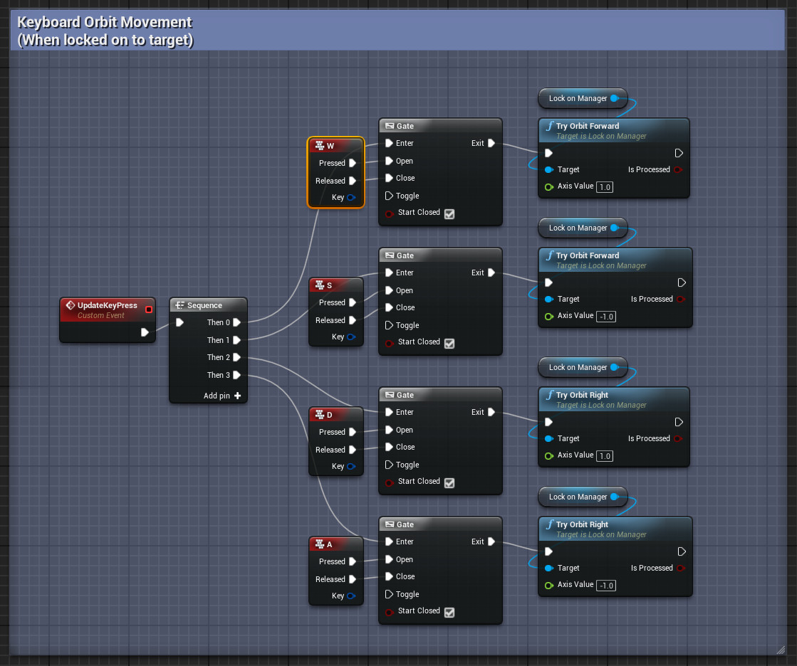
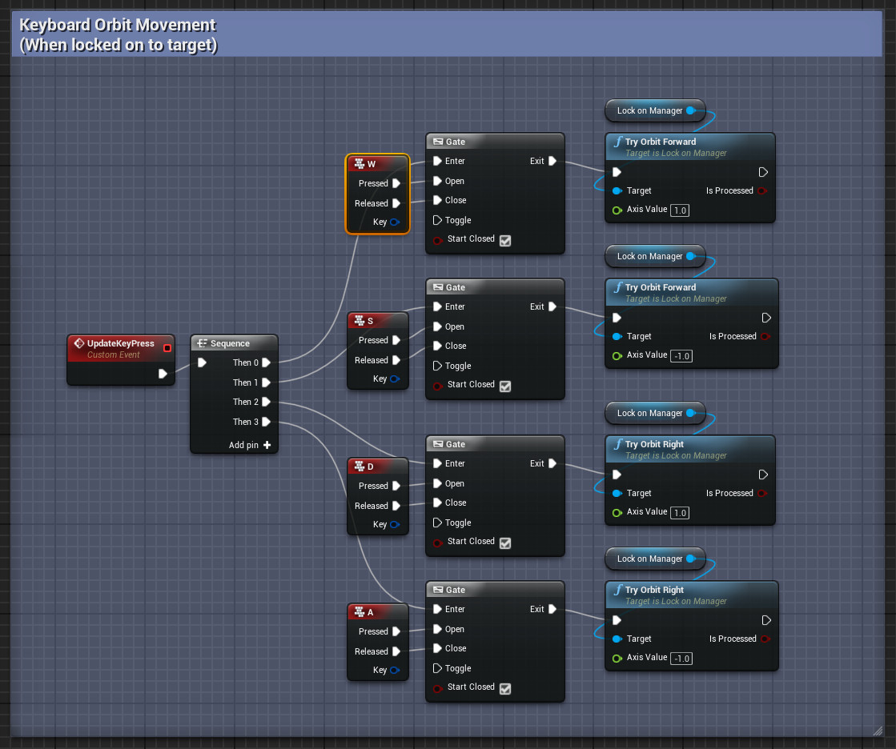

Lock-On Setup
Prepare a character
Make sure you have a character ready for the project.
On the package, there is an example character included in Content/LockOn360/Demo/Blueprints/Character/LockOnCharacter.
This is the character used for the LockOn360 demo, you can use this as a reference.
If you're new to Unreal Engine, it's recommended that you start by creating a new project based on the editor's ThirdPerson template.
Component setup
First thing to do is to add the LockOnManager component to your character
- Navigate to your character blueprint, open it in the editor.
- Inside the component tab, there should be an "Add Component" button
(usually placed at the top left of the editor) . -
Press the button and add the following components:
-
LockOnManager
(required)
Contains the logic for handling the 360 lock-on system. -
SpringArm
Make sure to attach your camera to the SpringArm component to ensure that the Lock-on system works accordingly.
If you're using UE4 ThirdPersonCharacter, your default camera (FollowCamera) should already be connected to a SpringArm component named CameraBoom by default.
-
Input redirection
By design, Lock-on 360 requires you to connect the direct values of your movement/camera inputs to the LockOnManager's orbit and flick functions.
Due to this, you will need to redirect your normal camera control and movement logic to the LockOnManager events mentioned below.
This is to ensure that your normal movement/camera logic can be processed whenever the lock-on system is disabled.
For camera control, you should redirect your default camera control to:
- OnGamepadCameraYaw
- OnGamepadCameraPitch
- OnMouseCameraYaw
- OnMouseCameraPitch
For movement, you should redirect your default movement logic to:
- OnDefaultMoveForward
- OnDefaultMoveRight
Activating/Deactivating the Lock-On System
There are 3 functions that can be used to activate/deactivate the Lock-On system.
- ToggleLockOn
- ActivateLockOn
- DeactivateLockOn
Each nodes performs the actions that their names implied.
For demo purpose, the ToggleLockOn function is used as the default action on the example LockOnCharacter.
Both ToggleLockOn and ActivateLockOn have a parameter named IsDeactivatedWhenOutOfRange.
This parameter is used to determine whether the Lock-on system will automatically deactivate itself when the target is out of range.
true will ensure that the lock-on is deactivated once the target is out of range for a certain period of time.false will keep the target locked-on, even if the target is not within range anymore.
To read a more detailed explanation on the out of range settings, see Out-of-range Settings.
Target Switching Functionalities
In Lock-on 360, target switching is performed by doing a quick flick towards the direction of the next target.
On the LockOnCharacter example, this can be done by either a flick of a mouse, or a flick of the gamepad's right thumbstick.
To perform target switching, separate functions are provided depending on whether you flick using a mouse or a gamepad thumbstick.
- MouseFlickRight
- MouseFlickUp
- GamepadFlickRight
- GamepadFlickUp
These functions should be connected to the default values of your camera inputs.

Orbiting Around the Target
To perform an orbit movement around the target when the lock-on is enabled, you will need to connect the following functions to your movement inputs.
- TryOrbitForward
(To move the character towards and away from the target) - TryOrbitRight
(To move the character in an orbit around the target)
The images below show an example of how the LockOnCharacter blueprint implements these functions.
Do note that it might be different from the way you connect these functions to your project's movement input, whether it's in UE4 or UE5.
Please adjust things accordingly depending on your project setup.
 
